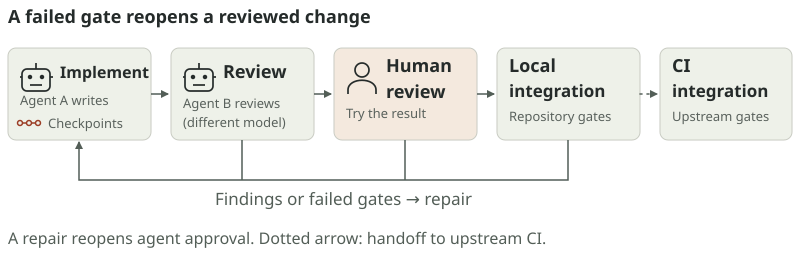
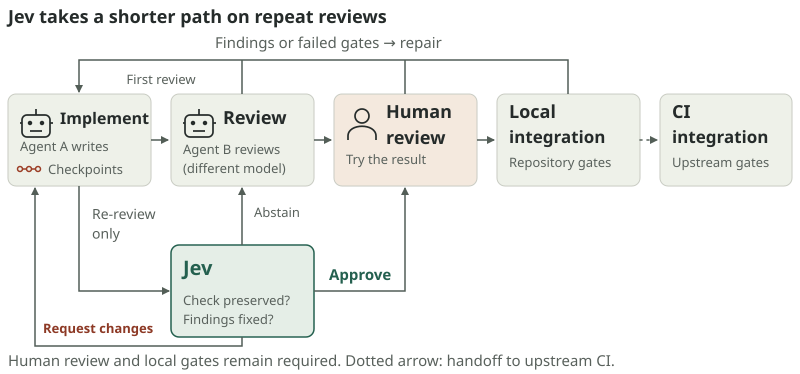
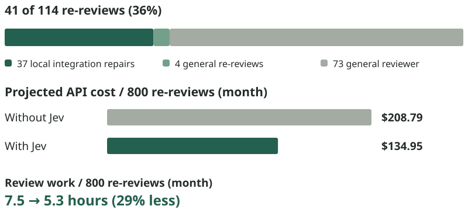
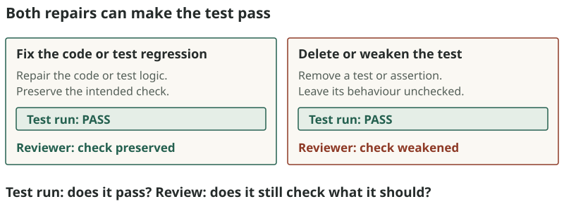
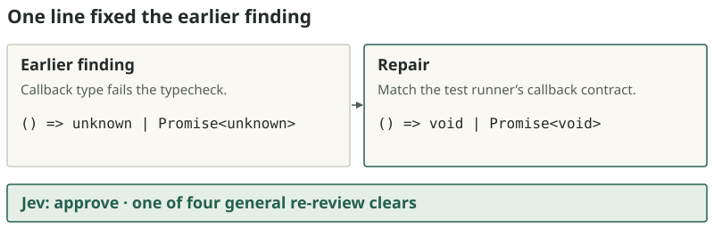
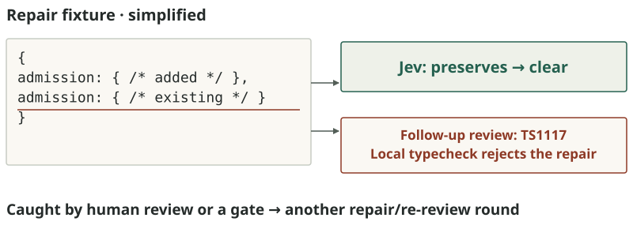

Building a cheaper review loop for coding agents using Jev
When tests find a regression in agent-written code, the agent repairs it and the change needs another review.
Jev, TypeSafe’s hosted classifier,
clears about a third of those re-reviews in my personal workflow, at a fraction of the
cost of a general LLM review.
Magnus Ekdahl ·
In Parallix, one agent family implements
a change and another agent, using a different model, reviews it before I do. Human review and integration gates
decide when the work is done. I don't expect the first agent to get it right first time; it usually needs a couple of feedback cycles.*

The work comes around again. Tests between handoffs, review by an agent from another model family, human review and integration gates can all return the work to the implementer.
Each re-review used to mean another general LLM review. That needs the requirements and codebase context, more than Jev can fit in 32k input tokens per question. Many re-reviews are easier:
did this repair fix the failed check without weakening it?
And would it not be great if we can take decisions in those cases an order of magnitude
faster and a couple of orders of magnitude cheaper?†
The result: 36% of re-reviews
Jev cleared
41 of 114 re-reviews (36%)‡:
37 repairs to local
integration gates and four general re-reviews. That leaves 73 for the general reviewer.
A typical integration-gate repair fixes one failed test or a performance regression.

Jev at the re-review. Approve proceeds to human review;
abstain sends the patch to agent B; request changes returns it directly to the
implementer. Local integration gates follow human approval; the dotted arrow
continues to upstream CI integration.
Using Claude API prices as the baseline, that routing mix gives this projection:

About 29% less review work and 35% less API spend.
For 800 re-reviews per month, the projection saves about
2.2 hours and $74,
allowing for general-reviewer fallback, Jev’s evidence preparation and calls.
Production uses several general reviewers; the estimate assumes the avoided reviews
would resemble the Claude sample.
Integration gates
Early experiments asked whether a repair addressed an integration failure. Jev kept
leaving the decision to the general reviewer. Some requests also exceeded its token
budget. Better packing got the requests through, but the decisions still weren’t useful.
The test run already answers whether the test passes after the fix. A reviewer has a
different job. An agent can make a test pass by fixing a code or test regression,
or by deleting or weakening a test.
Both can produce a green exit status; only one preserves what the test was
meant to establish.

Both tests pass. The repairs are different. The test run answers
whether it passes; the reviewer asks whether the repair preserves what it was meant
to establish. These are schematic examples.
That gave Jev a bounded job: judge whether the repair preserves the check and the
behaviour already approved. The question names concrete ways to weaken a check,
including skipping a test, loosening assertions or raising a CPU or time budget.
Build the evidence around that judgment
The classifier needs to know what was approved and what the repair changed. Its
packet identifies the approved and repair revisions, supplies their relevant diff, names the
failed check and states omissions. It excludes files changed only by other work
landed on main and identifies changes brought in by a rebase. Rebase changes in
the same file can still appear in the diff.
Filter files, not individual rebase hunks. A file changed only
on main is left out. If the repair also changes that file, its diff can still
contain changes from main. Filenames are schematic.
The local repair loop reruns its gates before re-review. A later rebase does not by
itself require repeating every local test; upstream CI provides the usual integration
validation. Jev’s approval leaves both stages in place.
The model version matters. I use Jev 1.13: on the same 43 approved historical repairs,
it cleared 24 against Jev 1.14’s 12.
General re-reviews
A request for changes gives Jev a specific question: did the repair fix what the
reviewer asked for? Parallix sends the earlier findings, repair diff, relevant source and
implementer’s response. Three questions run in parallel over that evidence, covering
the requested fixes and related regressions introduced by the repair.
One clear was a one-line TypeScript correction. A test helper accepted the wrong
callback return type; the repair changed it to the type the test runner requires.

A repair the classifier could check. Only the callback’s type
changed; runtime behaviour and assertions stayed the same.
The panel can approve or send the patch back to the implementer. With uncertainty,
conflicting votes or a failed call, the general reviewer takes over.
This path cleared four re-reviews in the dataset.
An approval can miss a defect
Jev is a different model from general LLMs such as Claude and makes different decisions.
It can make mistakes, but the difference I found in this sample was small.1
For example, in a local integration repair, the implementer added an admission
property to a fixture that already had one. Jev cleared the change. The focused suite
passed, but the separate TypeScript check later in the process rejected the duplicate key.

The repair introduced another problem. A follow-up review
reproduced TS1117 on this revision. The ordinary local typecheck rejects
it too. The example is simplified from the inspected patch.
The Jev tradeoffs
For me, the main cost is the attention tied up in review: waiting, checking progress
and switching back. The estimate saves about two hours of review work per month
at 800 re-reviews. How much human attention that recovers depends on when the workflow needs
me, and on how quickly I switch to the next task instead of waiting for the re-review
to finish. Reviews that run unattended offer less direct benefit.
Parallix keeps a human in the loop on purpose; I cannot assume a single agent pass finishes a mission. A defect Jev misses can reach my review or fail a later gate.
Cost matters too. Re-review API spend also falls by about 35%: $74 a month at API prices, before extra
repairs and upkeep. That can matter when reviews compete for a fixed token budget.
Human approval and the required gates stay in place in both options:
Adds Jev maintenance and a vendor dependency: code diffs go to TypeSafe via
OpenRouter. Failures fall back to the general reviewer.
Both options retain human review, local integration gates and upstream CI. Cost
and review work use the Claude Sonnet baseline and exclude extra repairs and upkeep.
The monthly workload is illustrative: four weeks at 200 re-reviews, not a measured rate.
The effect on human attention depends on the workflow and has not been measured.
1 The small difference in the sample is one confirmed repair defect
Jev cleared among 114 re-reviews. The combined route requested fixes 18 times
(15.8%); counting that missed defect gives 19 known cases a general reviewer
would have returned (16.7%), a difference of 0.9 percentage points. Follow-up
review covered selected cases, so this is the known difference rather than a
complete count of misses. General reviewers requested changes in 252 of 786
historical re-reviews (32.1%), from 14 August through 21 October. The matrix
applies the sample's 0.9-point difference to that baseline: ~31.2%, or about
256 versus 249 requests for fixes per 800 re-reviews. That projection holds the
review mix fixed; the historical and current cohorts are not a matched comparison.
Calculation details.
2 The 25 recovered Sonnet re-reviews averaged 33.84 seconds from
process launch to exit, including tool calls. Apply that mean to 800 reviews
without Jev, or 73/114 of them with Jev. Evidence preparation and classifier
calls add about 31 minutes per month, leaving about 2.2 hours saved (29%).
Untimed replay preparation uses the mean of four production panels. Shared
gates, general-reviewer prompt preparation, final workflow bookkeeping, extra
repairs and upkeep are excluded. Calculation details.
3 The Sonnet sample averaged $0.261 per re-review at API prices.
Apply the same routing shares and add about $1.25 of classifier calls per 800
re-reviews, using recorded panel costs and historical integration-question
costs. Estimated monthly saving: $73.84. Calculation details.
What I’d carry to another team is the bounded question: give Jev a repair it can
judge, leave uncertain cases with the general reviewer, and keep human approval
and the downstream gates. Count the misses as well as the reviews avoided;
the extra repair cycles determine whether the saving survives.